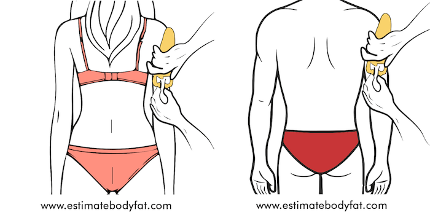
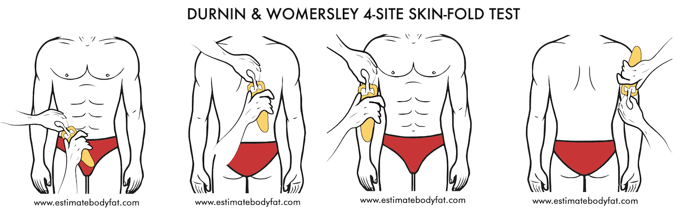

SKINFOLD CALIPER BODY FAT CALCULATOR
Looking for a 3-site, 4-site, 7-site or 9-site simple caliper body fat calculator?
This skinfold calculator can measure your total body fat percentage, lean body mass, fat body mass and BMI.
We built this calculator for ourselves as we wanted a quick and easy way to determine our own body fat percentage
We do charge $7.99 for 3 body fat estimates.
What is this Body Fat Caliper Calculator Based On?
The body fat caliper calculator is based on the skinfold method of determining body fat percentage. The skinfold method measures skinfold thickness at 3 to 9 different locations on the body (depending on the method used), then computes body
density and with it the total body fat percentage.
The body fat caliper calculator helps do all the computations for you, regardless of the method you want to
use.

Measurements are taken by grabbing the skin and subcutaneous fat and pulling it away from the muscle, then using a caliper to measure the corresponding thickness.
The measurements are then entered into the body fat caliper calculator
to give the total body fat percentage along with total fat mass, total lean mass, BMI and BMI category.
How to Take a Skinfold Caliper Measurement?
Source: Martin et al. 1985 – Adapted from Kinanthropometry and Exercise Physiology Laboratory Manual – 3rd Edition – Roger Eston & Thomas Reilly
1. It is important that someone else (ideally a trained professional) take your skinfold measurements.
2. Skinfold measurement should be taken on only one side of the body (usually right) and must be taken while standing and
relaxed.
3. Measurements should not be taken after exercise or when the skin is wet.
4. Ideally, the skin and corresponding fat must be grasped, stretched and held using the thumb and index finger for at least 2 to 4
seconds during measurement.
5. The caliper must be placed in between the pinch (perpendicular to the skinfold) and pressure must be applied to determine the corresponding thickness to the nearest 0.1mm.
6. The dial on
the caliper is the measurement that must be noted after the pressure on the trigger is released.
7. It is best to take at least three measurements per body part and the corresponding average for the body fat calculation.
8. Make sure to measure all body parts consecutively before proceeding with measuring the same body part again.
9. When repeating the skinfold assessment, it is best to use the same individual that performed the previous assessment.
How to Perform Skinfold Measurements on Various Body Sites?
Let’s take a look at where to place the thumb and index finger when taking the various skinfold measurements. Also, pay attention to the direction where to grab the skin and subcutaneous fat.
Chest (Pectoral)
Men: The pinch site (diagonal fold) should be midway between the anterior axillary line (armpit) and nipple.
Women:The pinch site (diagonal fold) should be one-third between the anterior axillary line (armpit) and nipple.
Abdomen (Belly)
The pinch site (vertical fold) on the abdomen should be around 2.5 to 5 cm to the right of the belly button.
Midaxilla (Middle of Armpit)

The pinch site (diagonal fold) can be taken directly below the armpit at the point where the middle of the armpit intersects the horizontal line of the breast bone.
Bicep
The pinch site (vertical fold) on the bicep should be front facing midway between the shoulder and elbow.
Tricep (Back of Upper Arm)

The pinch site (vertical fold) should be back facing midway between the bony point of your shoulder and elbow.
Suprailiac (Hip)
The pinch site (diagonal fold) is located about 1 to 2.5 cm above the iliac crest (hip bone).
Calf
The pinch site (vertical fold) is located along the largest circumference of the calf on the inside.
Thigh (Quadricep)
The pinch site (vertical fold) is located in the anterior (front) middle of your thigh, halfway between the hip and knee.
Subscapula (Lower Tip of Shoulder Blade)
The pinch site (diagonal fold) is located around 2 to 3 cm directly below the shoulder blade.
Lower Back
The pinch site (horizonal fold) should be 2 inches to the right of the spine and about 2 inches above the gluteus (upper-butt) muscles.
What sites does Jackson & Pollock 3-Site Skin Fold Test Measure?
The Jackson and Pollock 3-site skinfold test measures different skinfold sites for men and women.
Once the measurements are collected, the body density is calculated from it and using Siri’s equation, the body fat percentage is calculated.
Men: Chest, Abdomen and Thigh are measured.
Body Density = 1.1093800 - 0.0008267 x sum of (pectoral +abdomen +quadricep) + 0.0000016 x square of sum of (pectoral +abdomen +quadricep) - (0.0002574 x age)
Body Fat Percentage = 495/Body Density - 450
Women: Tricep, Thigh and Suprailiac (Hip) are measured.
Body Density = 1.0994921 - 0.0009929 x sum of (tricep +quadricep +suprailiac) + 0.0000023 x square of sum of (tricep +quadricep +suprailiac)- (0.0001392 x age)
Body Fat Percentage =495/Body Density - 450
What sites does Jackson & Pollock 4-Site Skin Fold Test Measure?
The Jackson and Pollock 4-site skinfold test measures the same skinfold sites for men and women.
Unlike the 3-site skinfold test, we will directly calculate the body fat percentage from the measurements.
Men: Abdomen, Tricep, Thigh and Suprailiac (Hip)

Body Fat Percentage = 0.29288 x sum of (abdomen + tricep + quadricep + suprailiac) - 0.0005 x square of sum of (abdomen + tricep + quadricep + suprailiac) + 0.15845 x age - 5.76377
Women: Abdomen, Tricep, Thigh and Suprailiac (Hip)
Body Fat Percentage = 0.29669 x sum of (abdomen + tricep + quadricep + suprailiac) - 0.00043 x square of sum of (abdomen + tricep + quadricep + suprailiac)+ 0.02963 x age + 1.4072
What sites does Jackson & Pollock 7-Site Skin Fold Test Measure?
The Jackson and Pollock 7-site skinfold test measures the same skinfold sites for men and women.
Once the measurements are collected, the body density is calculated from it and using Siri’s equation, the body fat percentage is calculated.
Men:Chest, Midaxilla, Abdomen, Tricep, Thigh, Subscapular (lower tip of shoulder) and Suprailiac (Hip)
Body Density = 1.112 - 0.00043499 x sum of (pectoral + midaxilla + tricep + subscapular + abdomen + suprailiac + quadricep) + 0.00000055 x square of sum of (pectoral + midaxilla + tricep + subscapular + abdomen + suprailiac
+ quadricep) - (0.00028826 x age)
Body Fat Percentage = 495/Body Density - 450
Women:Chest, Midaxilla, Abdomen, Tricep, Thigh, Subscapular (lower tip of shoulder) and Suprailiac (Hip)
Body Density = 1.097 - 0.00046971 x sum of (pectoral + midaxilla + tricep + subscapular + abdomen + suprailiac + quadricep) + 0.00000056 x square of sum of (pectoral + midaxilla + tricep + subscapular + abdomen + suprailiac
+ quadricep)- (0.00012828 x age)
Body Fat Percentage = 495/Body Density - 450
What sites does Durnin & Womersley 4-Site Skin Fold Test Measure?
The Durnin and Womersley 4-site skinfold test measure the tricep, bicep, subscapular (lower tip of the shoulder blade) and suprailiac (hip) for both men and women.
Once the measurements are collected, the body density is calculated
using the equations (see table) below for the different sexes and age groups. Following the calculation of body density, the Siri equation is used to calculate the body fat percentage.
Men

Women

| Age (in years) | Body Density (Men) | Body Density (Women) |
|---|---|---|
| < 17 | D = 1.1533 – [0.0643 X Log 10 (sum of skinfold)] | D = 1.1369 – [0.0598 X Log 10 (sum of skinfold)] |
| 17-19 | D = 1.1620 – [0.0630 X Log 10 (sum of skinfold)] | D = 1.1549 – [0.0678 X Log 10 (sum of skinfold)] |
| 20-29 | D = 1.1631 – [0.0632 X Log 10 (sum of skinfold)] | D = 1.1599 – [0.0717 X Log 10 (sum of skinfold)] |
| 30-39 | D = 1.1422 – [0.0544 X Log 10 (sum of skinfold)] | D = 1.1423 – [0.0632 X Log 10 (sum of skinfold)] |
| 40 -49 | D = 1.1620 – [0.0700 X Log 10 (sum of skinfold)] | D = 1.1333 – [0.0612 X Log 10 (sum of skinfold)] |
| > 50 | D = 1.1715 – [0.0779 X Log 10 (sum of skinfold)] | D = 1.1339 – [0.0645 X Log 10 (sum of skinfold)] |
Body Fat Percentage = 495/Body Density - 450
What sites does Parrillo 9-Site Skin Fold Test Measure?
The Parillo 9-site skinfold test measures the same 9 skinfold sites for men and women using the exact same formula. The body fat percentage is calculated directly from the measurements. This formula does not account for the difference between
the sexes or age groups.
The measurement sites include the chest, thigh, tricep, bicep, abdomen, subscapular (lower tip of shoulder blade), suprailiac (hip), lower back and calf.
Men
Women

Body Fat Percentage = [(sum of skinfold) x 27]/weight (in pounds)
What types of Skinfold Body Fat Calipers are Available?
Skinfold calipers vary greatly in quality and price.
There’s a body fat caliper that can work with almost any budget and for almost anyone. Instead of listing every possible body fat caliper in the market, here are 5 calipers that
differ greatly in quality, price, longevity, and material:
Harpenden Skinfold Caliper PRO

Harpenden Skinfold Caliper Pro is one of the most accurate calipers you can find in the market. It is trusted by universities, hospitals and fitness professionals around the world for decades and is considered the gold standard of skinfold
calipers.
The pro kit also comes with calibration dowel and includes software for body fat analysis. However, the only drawback is the price. The entire kit will push you back around $400.
Lange Skinfolds Body Fat Calipers

Lange Skinfold Calipers is also a caliper at the higher quality and price end of the market. Like the Harpenden Pro, it is also used by many healthcare and fitness professionals around the world. It is accurate to around 1.0 mm.
The
tips of the caliper adjust automatically for parallel movement. It is easy to read and also includes a calibration block. This caliper would push you back around $225.
Slim Guide Skinfold Caliper

Slim Guide Skinfold Caliper is affordable, easy to use and quite accurate. It is one of the best budget calipers on the market. If you are short for cash, you cannot go wrong with this purchase. It does come with an instructional booklet but no calibration
block as it is not needed. It retails for around $12.29
Accu-Measure Fitness 3000 Body Fat Caliper

Accura-Measure Caliper is made of durable Delrin plastic, easy to use, affordable and quite accurate. It is easy to read and retails for only $10.99. It does not require any calibration block.
Qiorange Digital Body Fat Caliper

The Qiorange Caliper is a digital caliper that displays the skinfold measurement in an LCD screen. It is easy to learn and use. It also stores measurements during the assessment.
The reviews on this caliper are mixed with some
loving it and some hating it. However, for the price of just $11.29, you can’t go wrong if you just want to try it out for yourself.
Advantges & Disadvantges of Skinfold Measurement
Advantges
1. A simple, low-cost and effective method of estimating body fat percentage.
2. Non-time consuming.
3. Non-invasive compared to methods such as Dexa Scans and Hydrostatic Weighing.
Disadvantges
1. The skill level of the individual performing measurement is a big factor in the accuracy of measurements.
2. Variability in measurements based on the type of caliper used for assessment.
3. Multiple equations and body measurement sites add to variability.
4. Results can be skewed if an individual is obese, extremely thin or elderly.
Body Mass Index (BMI) Standard
BMI is a simple measurement based on your height and weight to determine if you are underweight, normal weight, overweight or obese. BMI does not measure body fat percentage directly but has shown to moderately correlate with other methods of body fat
measurement.
It is a rudimentary measurement and can vary significantly depending on age, distribution of muscle mass, bone density and fat mass. The BMI calculation does not take ethnic body differences into account. It should be taken as a rule
of thumb rather than the perfect determination of your overall health.
BMI General Categories
| BMI | Category |
|---|---|
| Below 18.5 | Underweight |
| 18.5 – 24.9 | Normal or Healthy Weight |
| 25.0 – 29.9 | Overweight |
| 30.0 and Above | Obese |
BMI Height & Weight Chart

Source: Wikipedia
The World Health Organization has the following breakdown for BMI Categories:
| Category | BMI (FROM) | BMI (TO) |
|---|---|---|
| Very severely underweight | - | 15 |
| Severely underweight | 15 | 16 |
| Underweight | 16 | 18.5 |
| Normal (healthy weight) | 18.5 | 25 |
| Overweight | 25 | 30 |
| Obese Class I (Moderately obese) | 30 | 35 |
| Obese Class II (Severely obese) | 35 | 40 |
| Obese Class III (Very severely obese) | 40 | 45 |
| Obese Class IV (Morbidly obese) | 45 | 50 |
| Obese Class V (Super obese) | 50 | 60 |
| Obese Class VI (Hyper obese) | 60+ |
Other Body Fat Calculators
A.I. Body Fat Percentage Calculator
U.S. Military Body Fat and BMI Calculator
Skinfold Caliper Body Fat and BMI Calculator
Face Fat Calculator
Sources
Jackson, A. S., & Pollock, M. L. (1978). Generalized equations for predicting body density of men. British Journal of Nutrition, 40, 497-504.
Jackson, A. S., Pollock, M. L., & Ward, A. (1980). Generalized equations for predicting body density of women. Medicine and Science in Sports and Exercise, 12, 175-182.
Jackson A S, Pollock, M (1985) Practical assessment
of body composition. Physician Sport Med. 13: 76-90
J. Parrillo, Greenwood-Robinson. "High-performance bodybuilding" Berkeley Publishing group, New York,169-172, 1993.
Durnin, J.V.G.A. and Womersley, J. (1974). Body
fat assessed from the total body density and its estimation from skinfold thickness: measurements on 481 men and women aged from 16 to 72 years. British Journal of Nutrition, 32, 77-97.
Siri, W. E. (1961). Body composition
from fluid space and density. In J. Brozek & A. Hanschel (Eds.), Techniques for measuring body composition (pp. 223-244). Washington, DC: National Academy of Science.
Kinanthropometry and Exercise Physiology Laboratory Manual
– 3rd Edition – Roger Eston & Thomas Reilly
Disclaimer
None of the website's content is meant to be taken as medical advice. Speak to your healthcare professional for medical advice
I Lov Guitars Inc. will not be held liable for any claim, damage or other liability arising from, out, or in connection with using this web application and its content.
Images used on Estimate Body Fat have been obtained from Royalty Free Sites or purchased from Stock Repositories.
Credits
Special thanks goes out to Rachel Thomas and Jeremy Howard from Fast A.I. without whom this web application would not be possible. This application is built based on Jeremy's Bear Classifier WebApp. If
you are interested in learning about Deep Learning and how you can use AI in your projects, Fast AI holds free courses anyone can take on their website. Please do give them a look if you are curious.
In addition to Fast A.I.,
this web application also uses the Croppie Plugin and custom made Haar Cascades .
I would also
like to thank Dr. Jason Fung for writing such a life-changing book on solving Obesity and Harrison's Free tutorials on Haar Cascades
Images used on Estimate Body Fat have been obtained from Royalty Free Sites or purchased from Stock Repositories.
If you notice a discrepancy with anything, feel free
to send me a message at contact@estimatebodyfat.com